Patrones de desarrollo de los países: un análisis de componentes principales y de conglomerados sobre indicadores del Banco Mundial
Trabajo Práctico Final — Análisis Multivariado y Descubrimiento de Patrones
⚠️ BORRADOR para edición y validación humana. El contenido analítico, las cifras y las figuras provienen de ejecutar el pipeline reproducible (
src/run_all.py) sobre el corte 2023 de los World Development Indicators. Falta completar la carátula (nombres, fecha) y revisar la redacción final. Todas las afirmaciones cuantitativas son trazables a los archivos dedata/processed/.
Carátula
- Materia: Análisis Multivariado y Descubrimiento de Patrones
- Carrera: Licenciatura en Ciencia de Datos — Universidad Austral
- Trabajo: Práctico Final — Análisis de Componentes Principales (PCA) y Análisis de Conglomerados (clustering)
- Integrantes: [completar]
- Fecha de entrega: [completar]
- Conjunto de datos: World Development Indicators (Banco Mundial), corte transversal 2023 con comparación temporal contra 2005.
1. Introducción
1.1 Motivación y pregunta de investigación
El “desarrollo” de un país no es una magnitud que pueda medirse con un único número. Es un fenómeno multidimensional que combina el nivel de ingreso, la salud de la población, la urbanización, la conectividad, la estructura productiva y la inserción comercial, entre otras dimensiones. Cuando se dispone de muchos indicadores correlacionados entre sí, surge una pregunta natural y a la vez metodológicamente interesante:
¿Cuántas dimensiones realmente independientes hacen falta para describir las diferencias de desarrollo entre países, y existen grupos de países con perfiles reconocibles?
Este trabajo aborda esa pregunta con dos técnicas multivariadas complementarias, aplicadas sobre un panel de catorce indicadores de desarrollo:
- Análisis de Componentes Principales (PCA). Reduce un conjunto de variables correlacionadas a unos pocos ejes ortogonales (componentes) que concentran la mayor parte de la variabilidad. Su valor aquí es doble: sintetizar las dimensiones latentes del desarrollo y interpretarlas en términos sustantivos.
- Análisis de Conglomerados (clustering). Agrupa a los países por similitud para descubrir perfiles de desarrollo de manera no supervisada, sin imponer de antemano una clasificación.
La elección de PCA —y no de un Análisis de Correspondencias— responde a la naturaleza mayormente numérica de los datos. Las dos variables categóricas disponibles (la región y el nivel de ingreso del Banco Mundial) se reservan para un rol suplementario e ilustrativo: no intervienen en la construcción de los componentes ni en el cálculo de las distancias, sino que sirven para validar e interpretar los resultados (por ejemplo, comprobando si los grupos hallados de forma no supervisada coinciden con la clasificación oficial de ingreso).
A modo de hipótesis de trabajo, cabe esperar que una primera dimensión domine —un “gradiente de desarrollo” que ordene a los países de menor a mayor nivel— pero que no agote la estructura: dimensiones como la composición sectorial de la economía podrían variar con relativa independencia del nivel de desarrollo. El análisis pondrá a prueba esta intuición.
1.2 Datos
- Fuente. World Development Indicators (WDI,
source=2), API pública del Banco Mundial. Se descargó un snapshot crudo (fechado endata/raw/manifest.json) y todo el análisis trabaja a partir de él, de modo que los resultados sean reproducibles aunque la fuente se actualice. - Unidad de análisis. El país, en corte transversal anual. Se descartan las agregaciones del Banco Mundial (mundo, zona euro, agrupaciones por ingreso, etc.), reteniendo únicamente entidades con código ISO-3 válido y región no agregada: 217 países reales.
- Años. 2023 como corte moderno y 2005 como referencia temprana. La elección de ambos años se justifica por cobertura y estabilidad (§1.3).
- Tamaño. Aproximadamente 191 países × 2 años, muy por debajo del límite de 10.000 observaciones de la consigna.
- Variables. 14 indicadores numéricos (la consigna exige ≥ 5) más 2 categóricas.
| Dimensión del desarrollo | Indicadores numéricos (WDI) |
|---|---|
| Nivel de ingreso | PBI per cápita (US$ constantes de 2015, es decir, en términos reales) |
| Coyuntura macroeconómica | Crecimiento anual del PBI, inflación al consumidor, desempleo |
| Inversión e inserción comercial | Formación bruta de capital, exportaciones e importaciones (% del PBI) |
| Estructura productiva | Valor agregado de agricultura, industria y servicios (% del PBI) |
| Desarrollo social | Población urbana (%), esperanza de vida al nacer, uso de Internet (%) |
| Huella ambiental | Emisiones de CO₂ per cápita |
Variables categóricas (suplementarias): región y nivel de ingreso del Banco Mundial.
1.3 Decisiones de construcción del conjunto de datos
Tres decisiones merecen justificarse aquí porque condicionan todo lo que sigue; el detalle completo está en reports/decisiones_metodologicas.md.
Elección del año moderno (2023 y no 2021 o 2022). El PCA y el clustering son sensibles a años con perturbaciones macroeconómicas atípicas, porque tales episodios distorsionan la estructura de correlaciones. El año 2021 está contaminado por el rebote posterior a la pandemia (crecimientos del PBI anómalamente altos por la recuperación de la caída de 2020), y 2022 por el shock inflacionario global y la guerra en Ucrania. El año 2023 refleja un entorno ya normalizado y conserva cobertura adecuada en las catorce variables (todas por encima del 78 % de países con dato). Como evidencia de que la elección importa: con el corte 2021 la carga del crecimiento del PBI sobre el primer componente cambiaba de signo respecto de 2005, un artefacto del rebote; con 2023 esa carga es prácticamente nula en ambos años y la estructura resulta estable (§2.4). El año 2024 se descartó porque la cobertura cae por debajo del umbral en tres variables.
Elección del año temprano (2005). Es el año más temprano (≥ 2000) en el que todas las variables seleccionadas superan el 75 % de cobertura; la variable limitante es la formación bruta de capital. Tomar 2000 habría forzado una imputación excesiva en el corte temprano.
Selección de variables. De una lista candidata más amplia se descartaron tres indicadores: el índice de Gini (cobertura del 26–40 %, por basarse en encuestas esporádicas), el gasto público en educación (cobertura inestable e incomparable en el tiempo) y el INB per cápita PPA (de baja cobertura en 2005 y, además, redundante con el PBI per cápita, con el que correlaciona en torno a 0,98). El criterio rector fue privilegiar la comparabilidad temporal —usar exactamente el mismo conjunto de variables en ambos años— y evitar duplicar la dimensión de ingreso.
Tras los filtros de calidad, el conjunto final comprende 192 países en 2005, 191 en 2023 y un panel común de 183 países presentes en ambos cortes (el panel común es el que habilita el análisis de trayectorias de §2.4).
2. Desarrollo
2.1 Análisis univariado y bivariado
Distribuciones y decisión de transformaciones
El primer paso, anterior a cualquier modelado, fue examinar la distribución de cada variable (Figura 1) y su asimetría, porque tanto el PCA como el clustering por distancia euclídea son sensibles a la escala y a las colas pesadas. El diagnóstico reveló tres situaciones cualitativamente distintas:
- Variables estrictamente positivas y de varios órdenes de magnitud, con fuerte asimetría a derecha: el PBI per cápita (de ~250 a ~110.000 dólares) y las emisiones de CO₂ per cápita. Aquí la diferencia relevante entre países es multiplicativa, no aditiva, lo que justifica una transformación logarítmica (logaritmo natural para el PBI;
log1ppara el CO₂, que admite valores próximos a cero). - Variables con valores negativos (la inflación puede ser deflación; el crecimiento del PBI puede ser contracción), que impiden el logaritmo directo. Para las asimétricas de este grupo se usó la transformación Yeo-Johnson, que admite negativos y estima su parámetro a partir de los datos.
- Variables acotadas (participaciones sectoriales, porcentaje urbano, porcentaje de usuarios de Internet) con asimetría leve, que no se transformaron para no introducir distorsiones innecesarias.
El criterio fue decidir variable por variable según la asimetría observada, en lugar de aplicar una regla uniforme. Un caso ilustrativo es el crecimiento del PBI: se dejó sin transformar porque su asimetría original es leve, tiene valores negativos y está dominada por outliers puntuales (rebotes pospandemia), de modo que Yeo-Johnson no la mejoraba de forma estable. El orden de operaciones —primero transformar, después estandarizar— es el correcto: la transformación corrige la forma de la distribución y la estandarización iguala las escalas. Tras transformar, la asimetría queda contenida por debajo de 0,6 en valor absoluto en casi todas las variables.
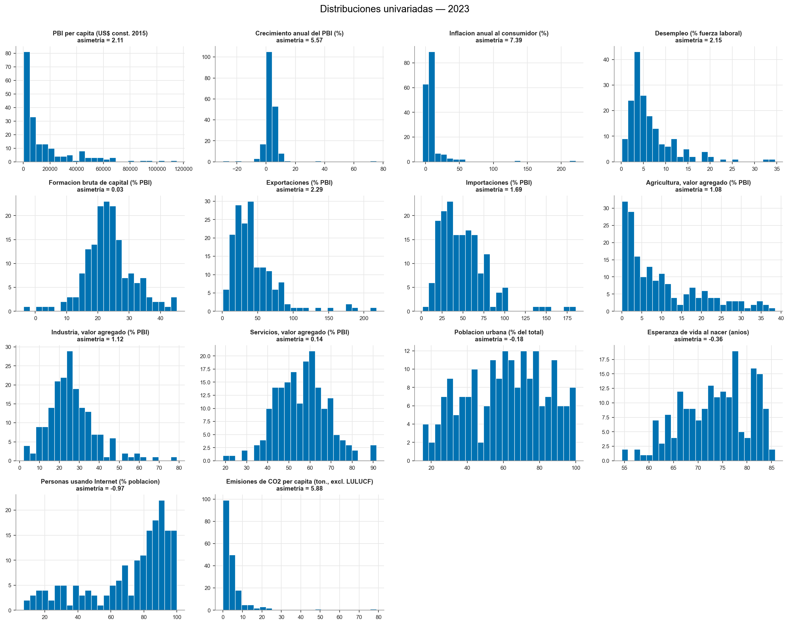
Estructura de correlaciones
El análisis bivariado (Figura 2) muestra un hallazgo que anticipa toda la sección de PCA: existe un bloque de variables fuertemente correlacionadas entre sí —PBI per cápita, esperanza de vida, urbanización, uso de Internet y emisiones de CO₂— que se mueven juntas y se oponen, con signo negativo, al peso de la agricultura en el producto. Es decir, los países ricos tienden simultáneamente a ser más urbanos, más longevos, más conectados y menos agrarios. Esta redundancia informativa es exactamente lo que el PCA aprovecha para sintetizar: si muchas variables dicen “lo mismo”, basta un eje para resumirlas. También aparecen correlaciones esperables y de interpretación más acotada, como la que vincula exportaciones e importaciones (ambas reflejan apertura comercial).
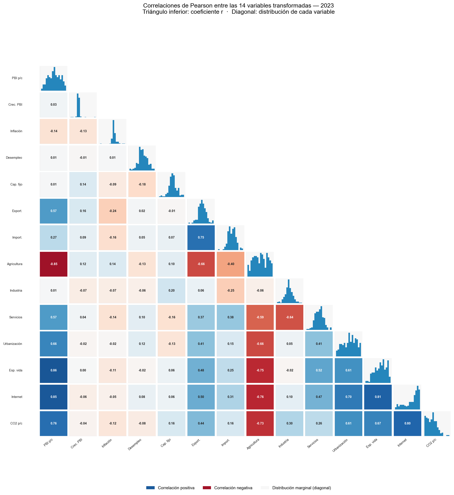
Cuando se cruzan las variables numéricas con la categórica nivel de ingreso (Figura 3), los grupos de ingreso quedan ordenados de manera monótona: a mayor ingreso, mayor esperanza de vida, mayor penetración de Internet y menor peso de la agricultura. Esta coherencia entre una variable categórica externa y el comportamiento de las numéricas es una primera señal de que un único eje latente —un gradiente de desarrollo— estructura buena parte de los datos.
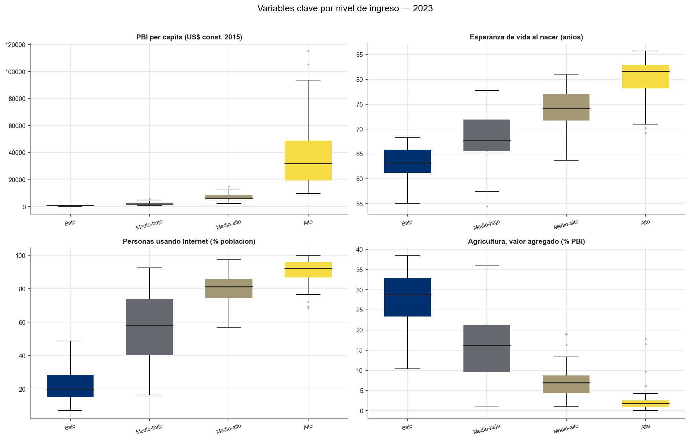
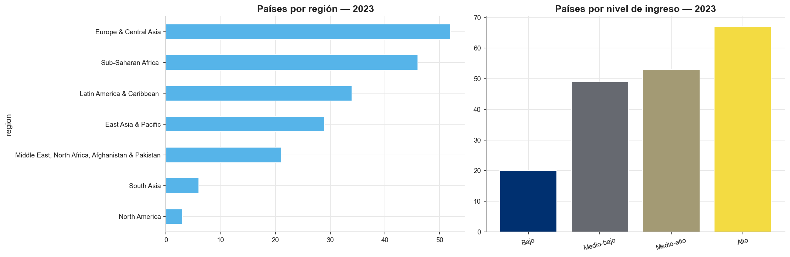
2.2 Técnica 1 — Análisis de Componentes Principales
Supuestos y preparación
El PCA se aplicó sobre la matriz de correlación, lo que equivale a trabajar con las variables estandarizadas (media 0, desvío 1). La estandarización es imprescindible porque las variables están en escalas incomparables —dólares, porcentajes, años, toneladas—: sin ella, el PBI per cápita, por su varianza nominal mucho mayor, dominaría artificialmente los primeros componentes. Estandarizar pone a todas las variables en pie de igualdad y obliga al método a “ganarse” la varianza explicada a partir de la estructura de correlaciones, no de las unidades de medida.
¿Cuántos componentes retener?
Decidir cuántos componentes conservar es una de las decisiones más delicadas del PCA, y deliberadamente no se basó en un único criterio. Se contrastaron tres (Figura 5):
- El criterio de Kaiser (autovalor > 1) sugiere 4 componentes; es conocido por sobrestimar y por su arbitrariedad.
- El umbral de 80 % de varianza acumulada llevaría a 6 componentes; el umbral mismo es convencional.
- El análisis paralelo de Horn —considerado el estándar de referencia— retiene 3 componentes. Este método compara cada autovalor observado contra la distribución de autovalores que produciría una matriz de datos aleatorios de las mismas dimensiones (se simularon 1.000 matrices y se tomó el percentil 95): solo se conservan los componentes que superan ese “ruido”.
Los tres criterios convergen en torno a 3–4 componentes. Se adoptan 3 para la interpretación, que acumulan el 64,9 % de la varianza total. Conviene subrayar una distinción que suele confundirse: estos tres componentes son los que se usan para interpretar y, eventualmente, como espacio de comparación para el clustering; para visualizar en un plano basta con dos. Nunca se mezclan ambos usos.
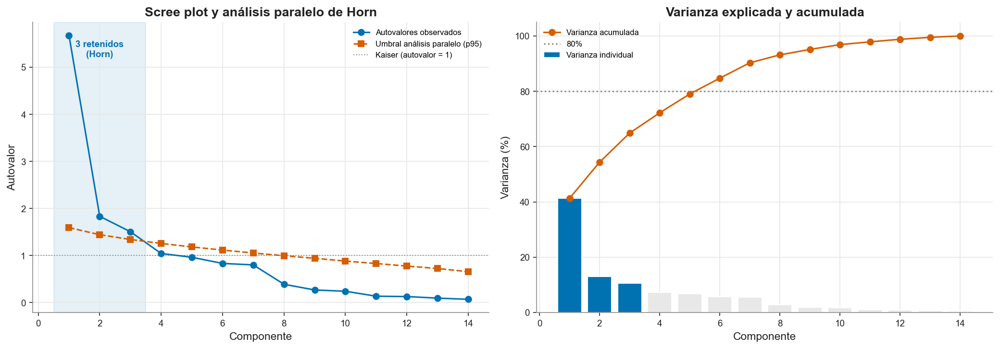
Interpretación de los ejes (en términos del problema)
Las cargas se leen como correlaciones entre cada variable y cada componente, lo que permite nombrar los ejes de forma sustantiva:
- PC1 (41,3 % de la varianza) — gradiente de desarrollo. Carga positivamente y con fuerza sobre el PBI per cápita (0,93), el uso de Internet (0,90), la esperanza de vida (0,87) y las emisiones de CO₂ per cápita (0,81), y negativamente sobre el peso de la agricultura (−0,92). Es el eje que ordena a los países desde un perfil “agrario, de menor ingreso y menor conectividad” hacia uno “rico, urbano, longevo y conectado”. Que un solo componente concentre el 41 % de la variabilidad de catorce indicadores confirma que el desarrollo tiene una dimensión dominante; que no llegue al 100 % recuerda que no es unidimensional.
- PC2 (13,1 %) — estructura productiva. Opone la industria y la formación de capital (cargas positivas) a los servicios y el desempleo (cargas negativas). Es un eje de composición de la economía, y su aspecto más interesante es que resulta ortogonal al PC1: la mezcla industria-servicios de un país es en buena medida independiente de su nivel de desarrollo. Hay economías muy desarrolladas y fuertemente industriales (estados petroleros del Golfo) y otras igualmente desarrolladas pero terciarizadas (centros de servicios), y el PC2 las separa sin contradecir su posición común en el PC1.
- PC3 (10,5 %) — apertura comercial y estabilidad macroeconómica. Combina exportaciones e importaciones (positivas) frente a la inflación (negativa); distingue economías abiertas y de precios estables de economías más cerradas o inflacionarias.
El círculo de correlaciones (Figura 6) y el biplot coloreado por nivel de ingreso (Figura 7) confirman visualmente la lectura: el PC1 separa con nitidez los niveles de ingreso del Banco Mundial, lo que valida el primer eje contra una clasificación externa que no participó de su construcción. La longitud de los vectores en el círculo informa, además, qué variables están bien representadas en el plano PC1–PC2 (las de vector largo) y cuáles requieren del PC3 para interpretarse.
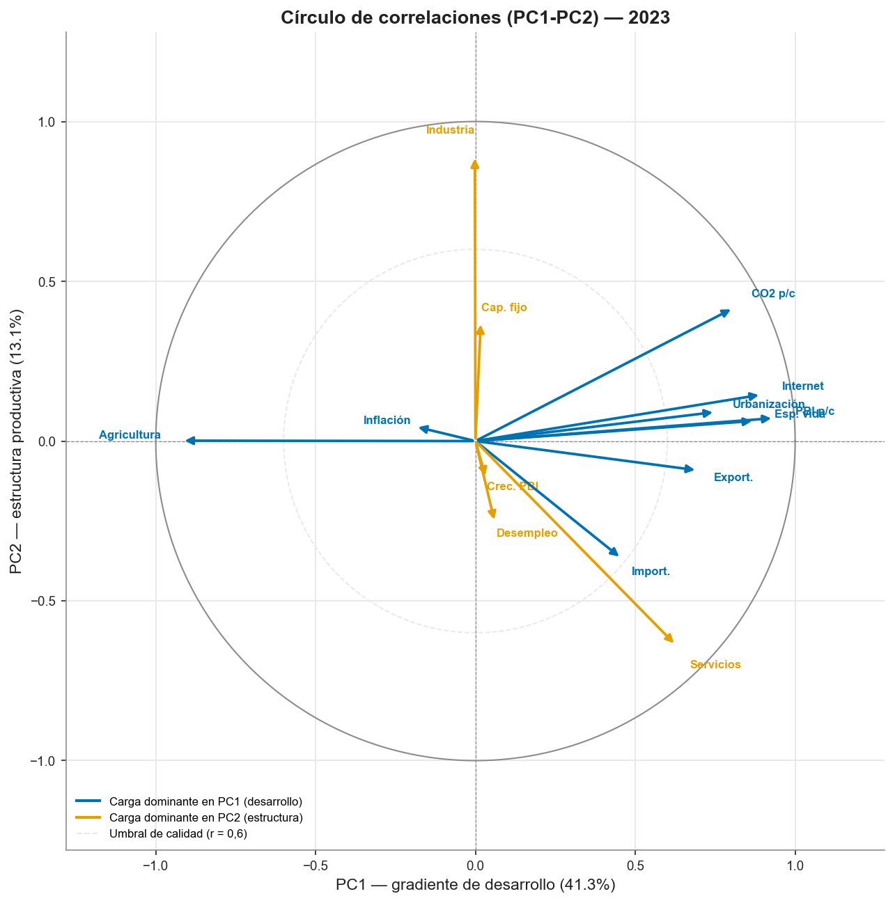
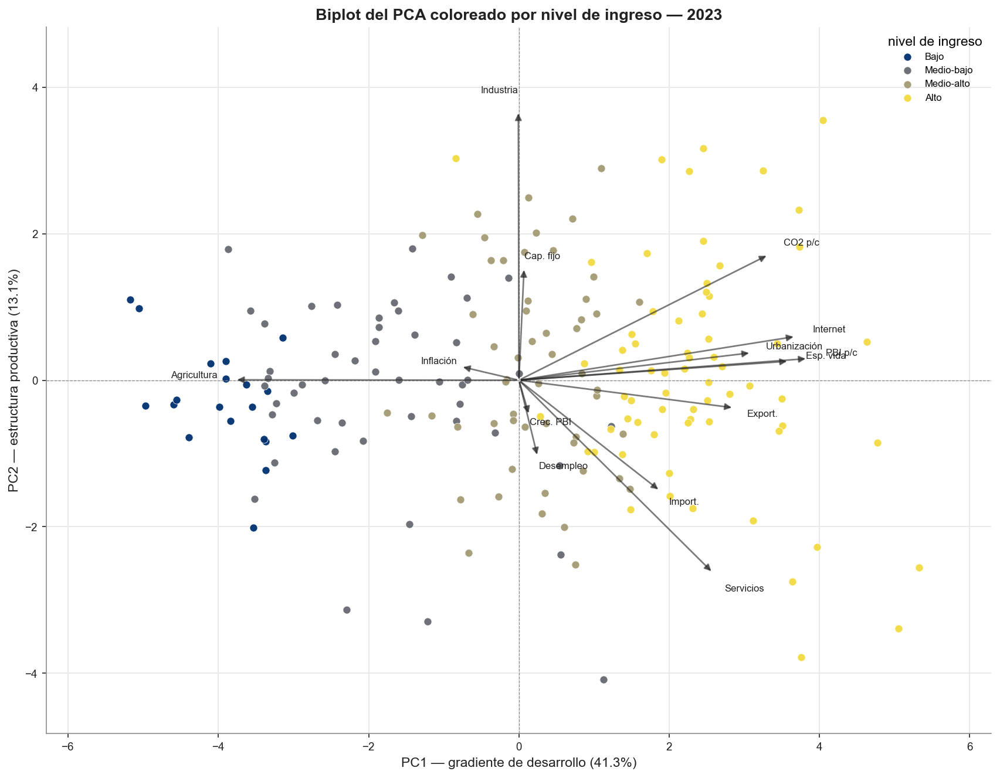
2.3 Técnica 2 — Análisis de Conglomerados
Una decisión metodológica central: ¿agrupar sobre las variables o sobre los componentes?
Existe la tentación de reducir primero con PCA y agrupar después sobre unos pocos componentes (lo que se conoce como tandem analysis). Es una práctica riesgosa: el PCA maximiza varianza, no separación entre grupos, de modo que la estructura de conglomerados podría residir en componentes de baja varianza que se descartarían. Con solo catorce variables no estamos en alta dimensión, por lo que la decisión adoptada fue:
- agrupar sobre las catorce variables completas (transformadas y estandarizadas) como análisis principal; y
- agrupar también sobre los tres componentes de Horn y medir el acuerdo entre ambas particiones mediante el índice de Rand ajustado (ARI).
El resultado es contundente: el ARI entre la partición sobre 14 variables y la partición sobre 3 componentes es 1,00 para k = 2, es decir, idénticas. La conclusión es matizada y honesta: aquí la estructura de grupos sí vive en los componentes de alta varianza, por lo que el tandem no introduce sesgo —pero esto se demostró en lugar de suponerlo. (El coeficiente de silueta sube de 0,28 sobre las 14 variables a 0,40 sobre los 3 componentes: el PCA “limpia” el ruido de las dimensiones de baja varianza y la separación se ve mejor, aunque la partición subyacente sea la misma.)
Algoritmos, número de conglomerados y estabilidad
Se emplearon dos algoritmos —k-means y el método jerárquico de Ward— y el número de grupos se decidió por consenso de varios criterios (Figura 8) más una prueba de estabilidad por remuestreo (criterio de Hennig):
| Criterio | Indica |
|---|---|
| Silueta, Calinski-Harabasz y Davies-Bouldin | k = 2 |
| Estadístico gap | k = 2 |
| Estabilidad bootstrap (Jaccard) | k = 2: 0,96 / 0,94 (muy estable); k = 3: 0,73–0,88; k = 4: se disuelve (0,27) |
| Acuerdo entre algoritmos (ARI k-means vs. Ward) | 0,62 (k = 2); 0,75 (k = 3) |
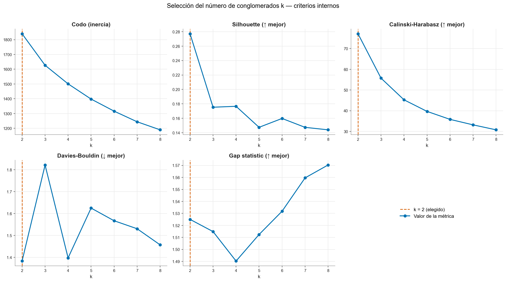
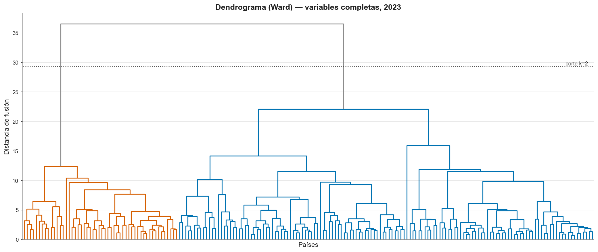
La convergencia es clara hacia dos conglomerados como partición principal: es la solución mejor respaldada por las métricas internas y de una estabilidad muy alta (las dos celdas de Jaccard por encima de 0,94). Conviene ser transparente sobre un punto: el acuerdo entre k-means y Ward para k = 2 (0,62) es menor que para k = 3 (0,75). Lejos de ser una contradicción, esto es coherente con la naturaleza continua del fenómeno (ver más abajo): cuando el desarrollo es un gradiente sin cortes naturales, la ubicación exacta de la frontera binaria depende algo del algoritmo, aunque la separación gruesa “desarrollado / en desarrollo” sea robusta. Se reporta además k = 3 como vista complementaria, que desagrega un gradiente de tres niveles (bajo desarrollo, emergente, desarrollado) y resulta también estable.
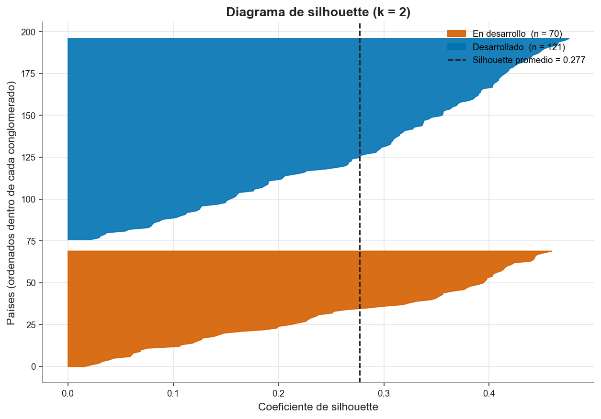
Supuestos de k-means y validación con métodos alternativos
k-means presupone conglomerados aproximadamente esféricos y de tamaño similar. Para poner a prueba ese supuesto se ensayaron dos alternativas. Un modelo de mezclas gaussianas (que admite grupos elípticos) coincide solo de forma moderada con k-means (ARI 0,62). Y, más revelador, HDBSCAN —que agrupa por densidad y puede declarar “ruido”— clasifica a cerca del 59 % de los países como ruido y reconoce apenas dos núcleos densos. Esto constituye la evidencia más honesta del trabajo: el desarrollo es un continuo (el gradiente del PC1) y no un conjunto de grumos densos y naturalmente separados. La consecuencia interpretativa es importante: el clustering ofrece una macro-separación útil, no una taxonomía fina de países. Por eso el coeficiente de silueta es moderado, y por eso evitamos vender los grupos como una tipología cerrada.
Perfil de los conglomerados (k = 2)
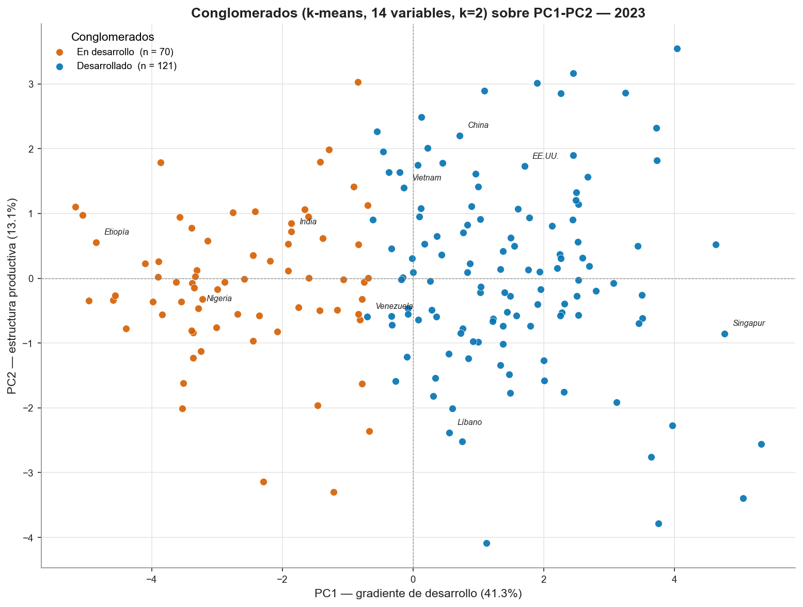
La descripción de cada grupo por las medianas de las variables originales (más interpretables que las estandarizadas) confirma una lectura nítida en términos del problema:
| Variable (mediana) | Grupo 0 — en desarrollo (70 países) | Grupo 1 — desarrollado (121 países) |
|---|---|---|
| PBI per cápita (US$ 2015) | 1.439 | 14.933 |
| Esperanza de vida (años) | 66,9 | 77,7 |
| Población urbana (%) | 41,2 | 74,0 |
| Uso de Internet (%) | 42,2 | 87,1 |
| Agricultura (% del PBI) | 19,2 | 3,0 |
| Emisiones de CO₂ per cápita (t) | 0,5 | 4,4 |
| Exportaciones (% del PBI) | 22,7 | 44,9 |
El grupo 0 reúne economías de menor ingreso, más agrarias, menos urbanizadas y conectadas; el grupo 1, economías de mayor ingreso, urbanas, terciarizadas y más integradas al comercio. La brecha es de un orden de magnitud en PBI per cápita (más de diez veces) y de más de diez años en esperanza de vida.
Validación e interpretación con las variables categóricas
El cruce de los conglomerados con el nivel de ingreso oficial arroja una asociación fortísima: χ² = 135,8 (p ≈ 2 × 10⁻²⁸) para k = 2 y χ² = 228,9 (p ≈ 5 × 10⁻⁴⁵) para k = 3. Es decir, los grupos hallados de forma no supervisada —solo a partir de la similitud en catorce indicadores— reconstruyen en lo esencial la clasificación de ingreso del Banco Mundial. Pero lo más informativo no es la coincidencia, sino las excepciones, porque señalan países cuyo perfil estructural difiere de lo que sugeriría su ingreso:
- Ingreso medio-alto pero perfil “en desarrollo” (caen en el grupo 0): Indonesia, Guatemala, Fiji y varias islas del Pacífico (Marshall, Tonga, Samoa). Son economías más agrarias y menos urbanizadas de lo que su nivel de ingreso anticiparía.
- Ingreso medio-bajo pero perfil “desarrollado” (caen en el grupo 1): Vietnam, Marruecos, Túnez, Jordania y Líbano. Son economías más urbanizadas, conectadas y terciarizadas que sus pares de ingreso —“rinden por encima” de su categoría en las dimensiones estructurales del desarrollo.
Estas excepciones ilustran el valor de un enfoque multivariado por sobre una simple ordenación por ingreso: dos países con el mismo PBI per cápita pueden ocupar lugares distintos en el espacio del desarrollo según su urbanización, conectividad y estructura productiva.
2.4 Comparación temporal 2005 vs 2023
El problema de comparar a través del tiempo: la tendencia secular
Comparar dos cortes temporales exige cuidado. Ajustamos un solo PCA sobre los dos años apilados (transformaciones y escala decididas sobre la distribución combinada; imputación siempre dentro de cada año), de modo que el eje de desarrollo esté definido de forma idéntica en ambos cortes. Esto permite comparar la estructura. Sin embargo, comparar las posiciones absolutas de los países entre años sobre este eje no es válido, y la razón es importante:
Varias de las variables que definen el PC1 tienen una fuerte tendencia secular global. El caso extremo es el uso de Internet, cuya mediana pasó de 10 % (2005) a 81 % (2023); también subió la esperanza de vida (71 → 74 años). En el espacio común, esto desplaza a todos los países hacia la derecha del PC1 (su media pasa de −0,47 en 2005 a +0,47 en 2023). Ese corrimiento refleja la difusión tecnológica y sanitaria mundial, no que los países hayan mejorado unos respecto de otros.
La descomposición lo confirma (Figura 14): el corrimiento absoluto medio del PC1 está dominado por Internet (47 %) y la esperanza de vida (22 %); el PBI per cápita —que, aclaremos, está en dólares constantes de 2015, es decir, es real y no nominal— aporta apenas el 9 %. Es decir, el “avance” absoluto es en gran medida una marea creciente secular, y tomarlo como medida de desarrollo relativo sobreestimaría el progreso (haría aparecer, por ejemplo, a 2005 como mucho menos desarrollado de lo que era simplemente porque Internet aún no se había difundido).
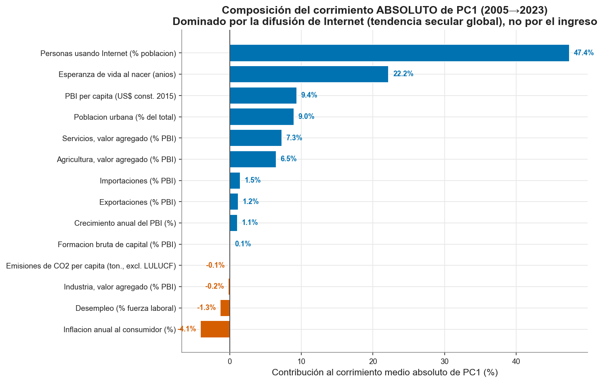
La comparación válida: posición RELATIVA dentro de cada año
Para neutralizar la tendencia secular comparamos la posición relativa de cada país respecto de sus contemporáneos, de dos maneras complementarias:
- Tiers relativos: se clasifica cada año por separado en “desarrollado / en desarrollo” (k-means dentro del año). Así, “desarrollado en 2005” significa estar en el grupo alto entre los países de 2005. El resultado corrige la lectura ingenua: ya había 107 de 192 países en el tier desarrollado en 2005 (entre ellos, como es esperable, EE.UU., Alemania, Japón, Francia, Corea, etc.), y 121 de 191 en 2023. La proporción de “desarrollados” sube de forma moderada (≈56 % → ≈63 %), muy lejos del “casi todos avanzaron” que sugería la lectura absoluta.
- Percentil de desarrollo dentro del año: se rankea el PC1 (eje común) dentro de cada año. El cambio de percentil mide si un país ganó o perdió terreno frente a sus pares (Figura 12). Sobre la diagonal no hay cambio relativo; por encima, ascenso (catch-up); por debajo, descenso.

Movilidad relativa (Figura 13). En el panel común, 15 países ascendieron del tier en desarrollo al desarrollado —catch-up genuino: China, Vietnam, Georgia, Albania, Azerbaiyán, Botsuana, Marruecos, entre otros— y solo 1 descendió (Islas Marshall). Los mayores ascensos relativos en percentil son Georgia (+19), China (+17), Mongolia (+14); los mayores descensos, exactamente los países en crisis: Venezuela (−28), Líbano (−26), Argentina (−16). Nótese que los países desarrollados de larga data (EE.UU., Alemania, Corea) aparecen en el percentil más alto en ambos años: no es que “no hubiera desarrollados en 2005”, sino que ya lo eran.

Estabilidad de la estructura
¿Cambió el significado del desarrollo en estas casi dos décadas? No: la congruencia de Tucker entre las cargas del PC1 de 2005 y de 2023 es 0,962 (correlación 0,946), de modo que el gradiente de desarrollo es prácticamente el mismo eje (Figura 15). La agricultura sigue siendo el marcador más estable de menor desarrollo y las exportaciones e importaciones ganaron algo de peso. A diferencia del corte 2021, con 2023 el crecimiento del PBI ya no distorsiona el PC1, lo que confirma el beneficio de elegir un año macroeconómicamente estable. En síntesis: la estructura del desarrollo se mantuvo estable, y la movilidad relativa —no el corrimiento secular absoluto— es la medida válida del cambio.

2.5 Análisis de sensibilidad
Para que las conclusiones sean creíbles, se verificó su robustez ante decisiones metodológicas alternativas, comparando cada variante contra la configuración base (estandarización estándar, imputación KNN, 14 variables, k = 2) mediante el ARI de la partición y la correlación de las cargas del PC1:
| Variante | ARI vs. base | Corr. cargas PC1 |
|---|---|---|
| Imputación MICE | 0,958 | 1,000 |
| Casos completos (sin imputar) | 1,000 | 0,996 |
| Clustering sobre 2 / 3 / 5 componentes | 0,94 / 1,00 / 1,00 | 1,000 |
| Sin 10 outliers | 0,934 | 0,982 |
| RobustScaler (todos los países) | −0,004 | 0,009 |
| RobustScaler (sin Macao) | 0,743 | 0,925 |
Ni el método de imputación, ni el número de componentes, ni la mayoría de los outliers alteran las conclusiones. El único quiebre es el escalado robusto, y resulta instructivo en lugar de preocupante: RobustScaler escala por el rango intercuartílico pero no acota las colas, de modo que el crecimiento del PBI de Macao en 2023 (+75 %, por el rebote turístico pospandemia), al dividirse por un rango intercuartílico pequeño, adquiere una magnitud enorme y secuestra el primer componente, que pasa a ser un eje de “crecimiento”. Al remover únicamente a Macao, el resultado se recompone (ARI 0,74; correlación de cargas 0,93). La moraleja es que, ante variables de colas pesadas sin transformar, StandardScaler —cuyo desvío, inflado por los propios outliers, los atenúa— es preferible: el episodio respalda la elección por defecto del trabajo.
3. Conclusiones
- El desarrollo tiene una dimensión dominante pero no es unidimensional. Un único eje (PC1) concentra el 41 % de la variabilidad de catorce indicadores y se interpreta como un gradiente de desarrollo (ingreso, salud, urbanización y conectividad frente al peso agrario); pero hacen falta tres componentes para alcanzar ~65 %, donde el segundo capta la estructura productiva (industria vs. servicios) y el tercero la apertura comercial y la estabilidad macroeconómica, ambos en buena medida independientes del nivel de desarrollo.
- Los países se organizan en una macro-separación de dos grupos —desarrollado y en desarrollo— robusta, estable y fuertemente alineada con la clasificación de ingreso del Banco Mundial, aunque con excepciones reveladoras (países que “rinden por encima” o “por debajo” de su ingreso en las dimensiones estructurales). No se trata de una taxonomía fina: la evidencia (silueta moderada, HDBSCAN reconociendo un continuo) indica que el desarrollo es esencialmente un gradiente.
- Entre 2005 y 2023, el “avance” absoluto es en gran medida una tendencia secular, no desarrollo relativo. El corrimiento del PC1 está dominado por la difusión mundial de Internet (47 %) y la esperanza de vida (22 %), por lo que comparar posiciones absolutas entre años sobreestima el progreso. La medida válida es la posición relativa dentro de cada año: ya había 107/192 países en el tier desarrollado en 2005 y 121/191 en 2023; en movilidad relativa, 15 países hicieron catch-up (China, Vietnam, Georgia…) y solo 1 retrocedió de tier (Islas Marshall), mientras que Venezuela, Líbano y Argentina caen marcadamente en su percentil. La estructura del desarrollo permaneció estable (congruencia del PC1 = 0,96).
- En lo metodológico, agrupar sobre las variables completas y comparar contra los componentes evita el sesgo del tandem analysis; aquí ambas particiones coinciden (ARI 1,00), pero la coincidencia se demostró en vez de suponerse.
Limitaciones
- El análisis es transversal: describe asociaciones y posiciones, no relaciones causales.
- El clustering es una macro-separación, no una tipología fina; así se reporta explícitamente.
- El “avance” temporal absoluto está confundido por la tendencia secular de variables como Internet (mediana 10 % → 81 %); por eso no se usa para medir desarrollo y se privilegia la posición relativa dentro de cada año (tiers y percentiles), robusta a esa tendencia.
- La imputación (faltantes ≤ 15 %) y los outliers no alteran las conclusiones, con la salvedad documentada de la interacción entre
RobustScalery el caso de Macao. - Los WDI sufren rezagos y revisiones, y algunos indicadores cambian de definición (por ejemplo, la serie de CO₂): por ello se fija y documenta un snapshot fechado.
Apéndice
- A1. Cobertura por variable y año (
data/processed/cobertura_por_anio.csv). - A2. Asimetría antes y después de transformar (
skewness_antes_despues.csv). - A3. Autovalores y cargas completas del PCA (
pca_autovalores_2023.csv,pca_loadings_2023.csv). - A4. Métricas de selección de k, estabilidad y perfilado completo (
clustering_resultados_2023.json,perfil_medianas_k*_2023.csv). - A5. Trayectorias, transiciones y descomposición del avance (
trayectorias.csv,transiciones_cluster.csv,descomposicion_dPC1.csv). - A6. Tabla de sensibilidad (
sensibilidad.csv). - A7. Registro completo de decisiones metodológicas (
reports/decisiones_metodologicas.md). - A8. Visualizaciones complementarias en
reports/figures/: cargas de PC1–PC3 en barras (pca_loadings_barras_2023.png) y dos vistas alternativas de las transiciones de grupo —diagrama de flujo Sankey (compare_transicion_sankey.png) y gráfico waffle (compare_transicion_waffle.png)— que pueden reemplazar o acompañar a las figuras del cuerpo según el formato de la entrega.